BMW 5 Series showcase
Video Source:(Race Sport Media, 2022)
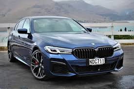 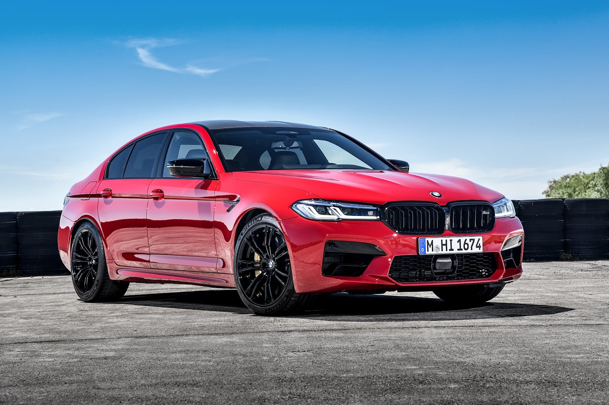 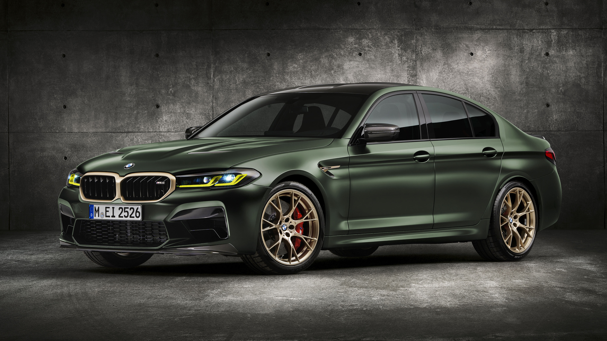 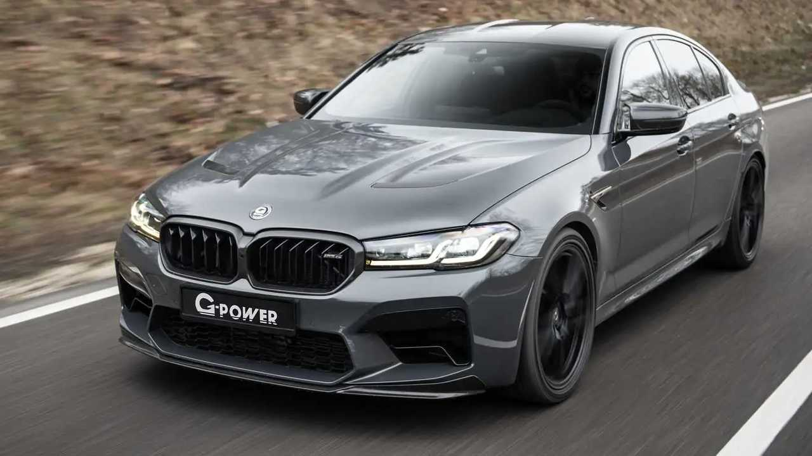 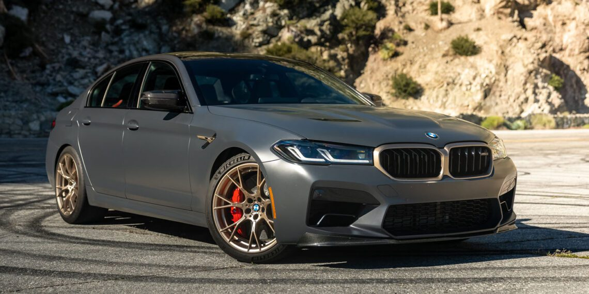 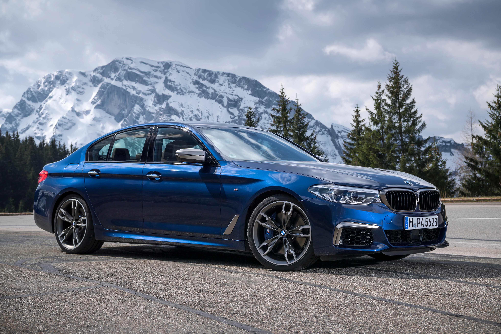 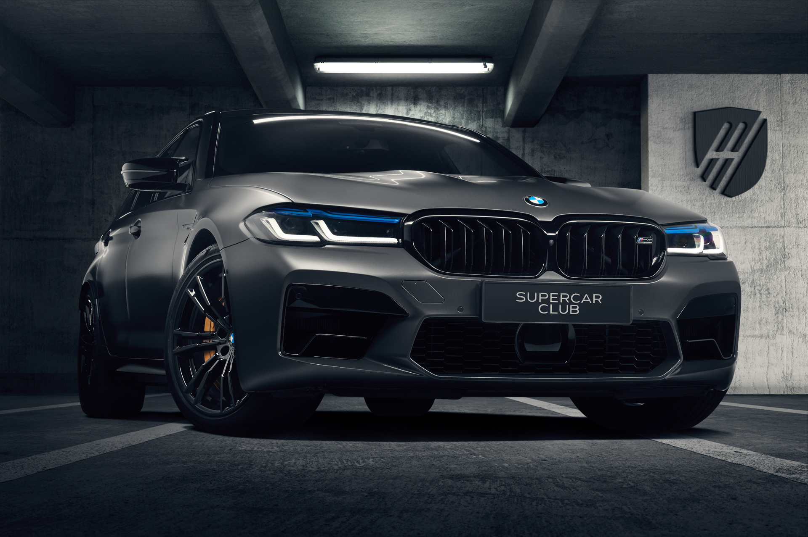 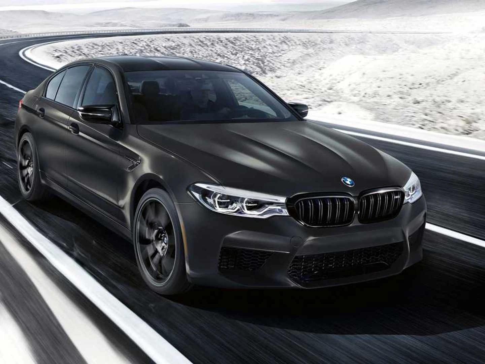 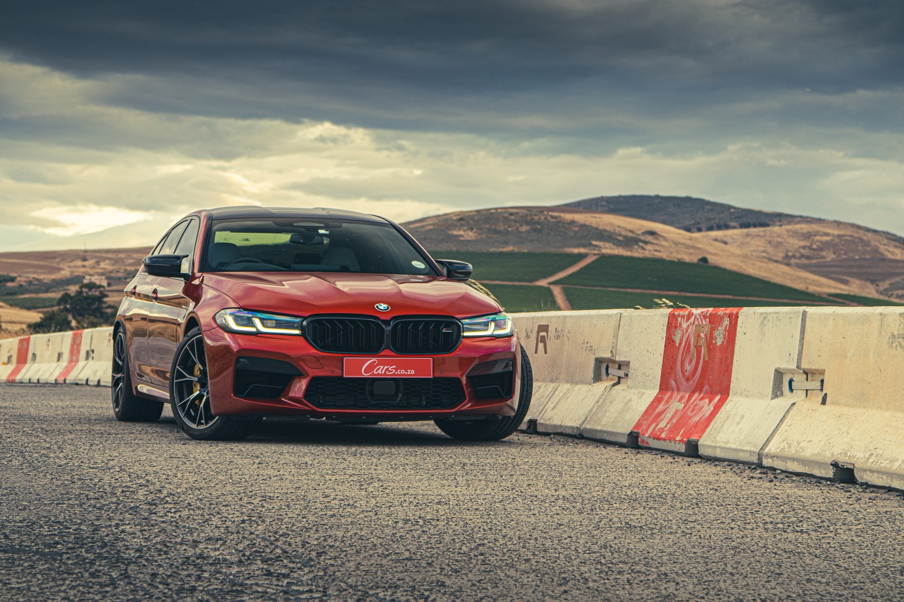 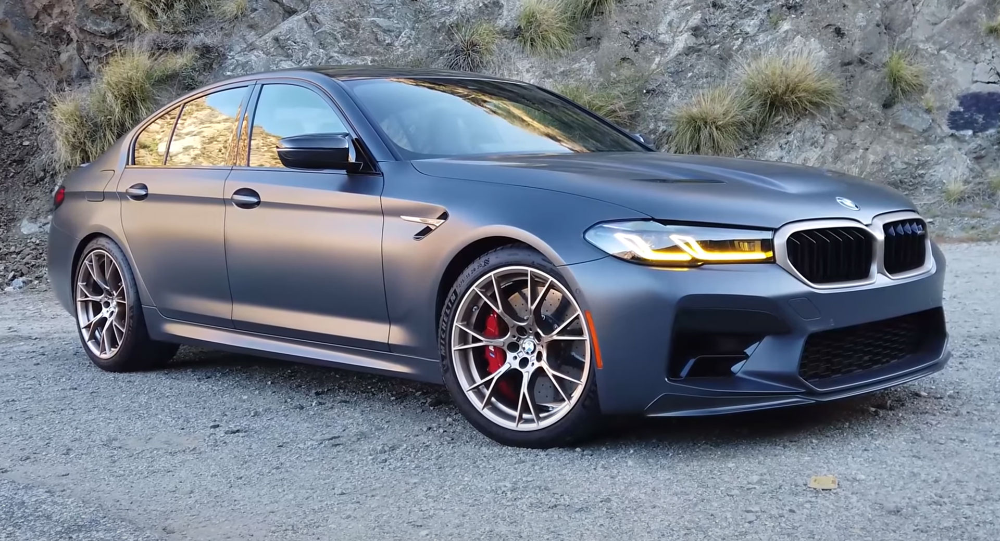 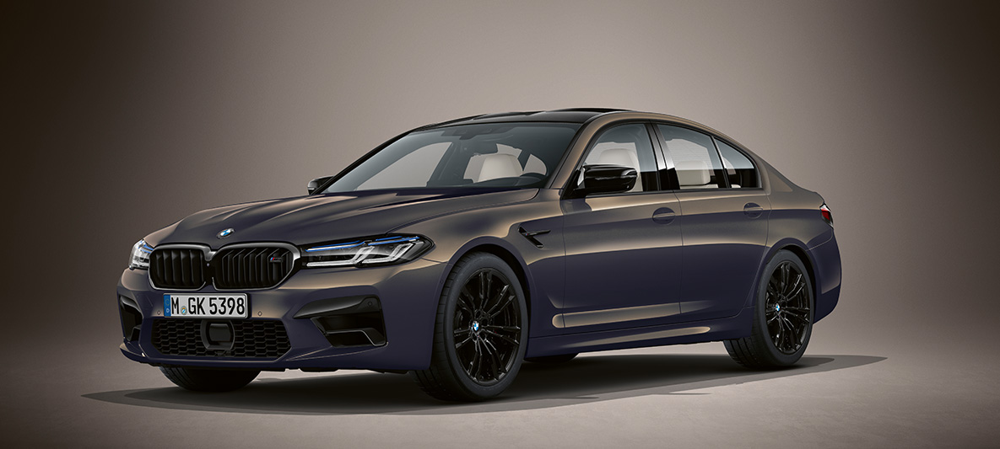 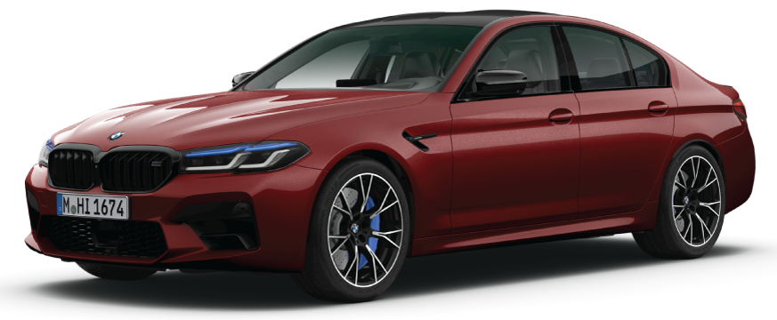
Links For Each Image
Blue (Selby, 2021)
Red (2023 BMW M5 Prices, Reviews, and Photos - MotorTrend, 2023)
Green (Gear, 2021c)
Grey Metalic (Adrian, 2021)
Matte Grey (Vega, 2022)
Blue (2) (Administrator, 2017)
Blue Matte Grey (2) (BMW M5 Competition - Supercar Club Poland, 2023)
Black (Smith, 2019)
Red (2) (Taylor, 2022)
Matte Grey(3) (Anderson, 2022)
Grey (2) (Boeriu, 2020)
Red (3) (Auto Bavaria, n.d.)
Navigation:
Home
Specifications
Variants
References